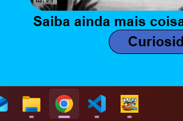
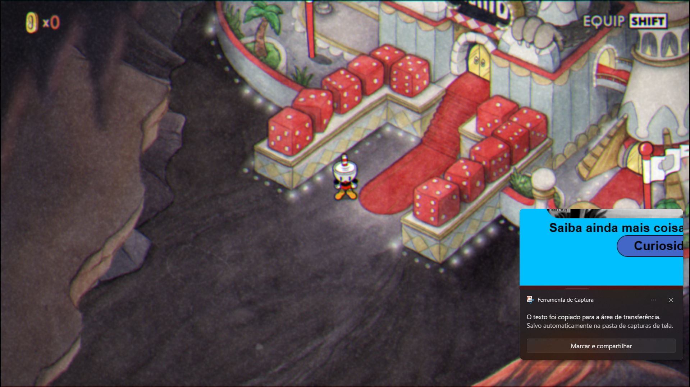

Como um fã do jogo e estudante de informática, eu decidi unir a necessidade de criar o site com um assunto que eu conhecesse bem. Assim, eu escolhi o Cuohead como tema do site, já que, como dá pra ver navegando por aqui e jogando o jogo, ele é riquíssimo em detalhes

A base do site foi toda feita em html e css, usando as orientações do professor e descobertas na internet sobre as linguagens

Para tornar o site mais visualmente completo, escolhi, além de encontrar imagens na internet, complementar os assuntos que eu abordava usando algumas capturas de tela que eu tirava do jogo sobre determinada parte que eu fosse abordar

